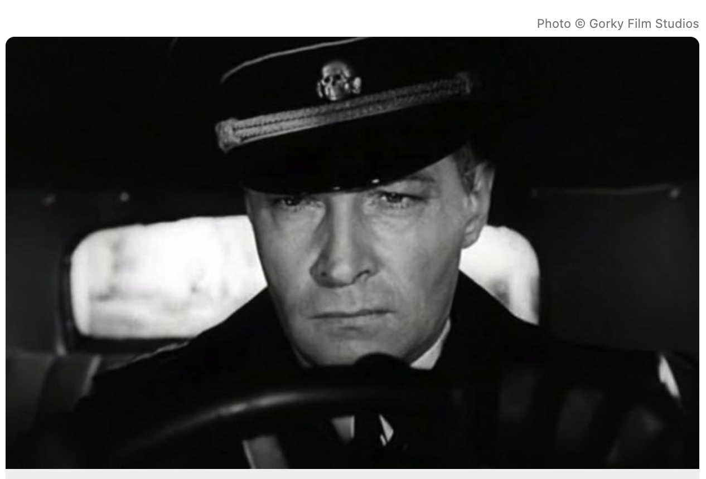

The Maxim Isaev spy franchise, based on Yulian Semyonov's novels, revolves around a Soviet intelligence officer operating in Nazi Germany as Max Otto von Stierlitz. The franchise is most famous for the 1973 miniseries Seventeen Moments of Spring, a cultural phenomenon, and the 2009 prequel series Isaev.
Key Aspects of the Isaev Franchise:
Protagonist: Maxim Isaev (aka Max von Stierlitz), a Soviet intelligence colonel who infiltrates the Nazi RSHA, rising to become a top security officer.
Key Adaptations:
Seventeen Moments of Spring (1973): A 12-part series considered the most successful Soviet spy thriller, where Stierlitz works to disrupt separate peace negotiations between Nazi Germany and the Western Allies.
Isaev (2009): A 16-episode series focusing on the early career of the spy (available on Tubi and Apple TV).
